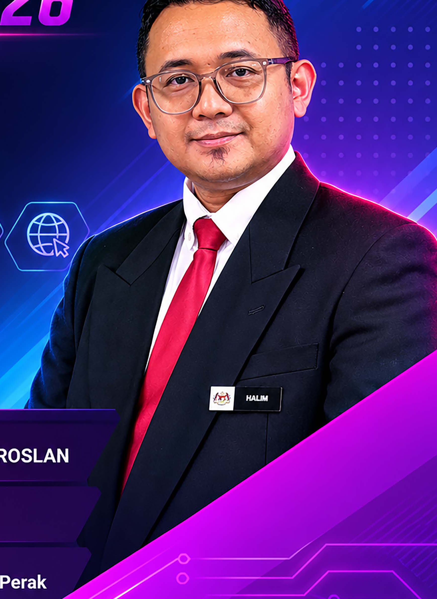
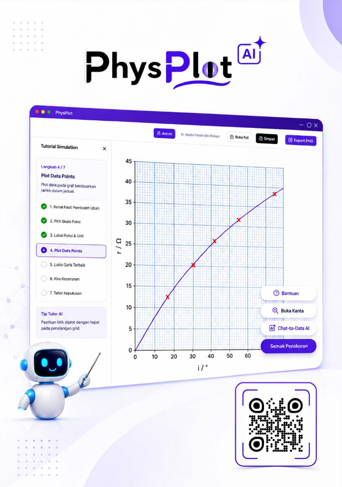
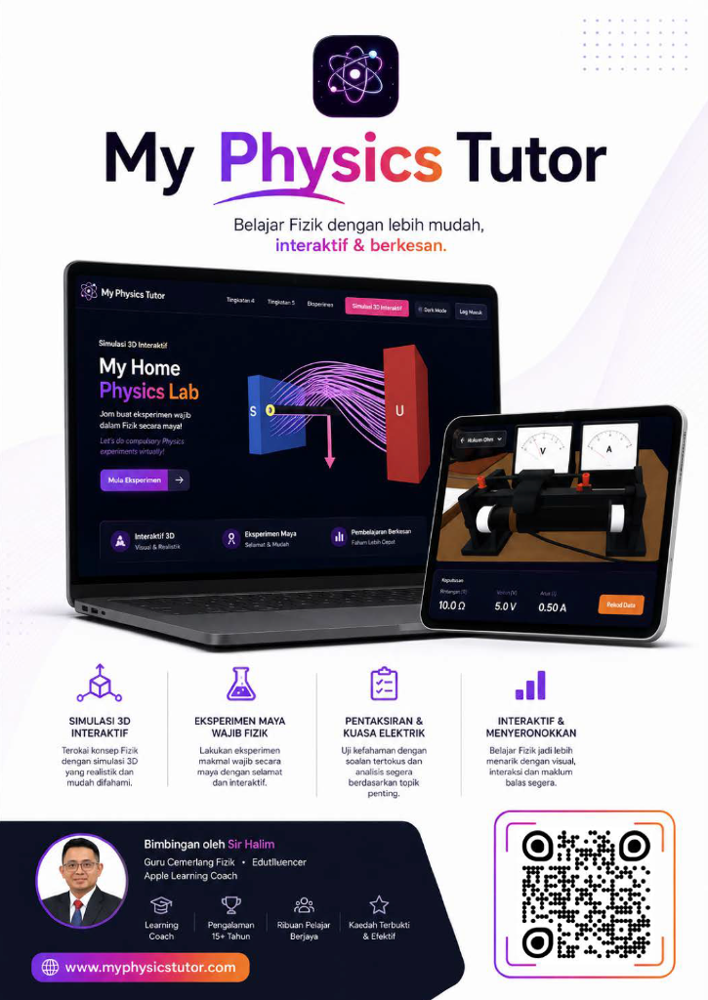
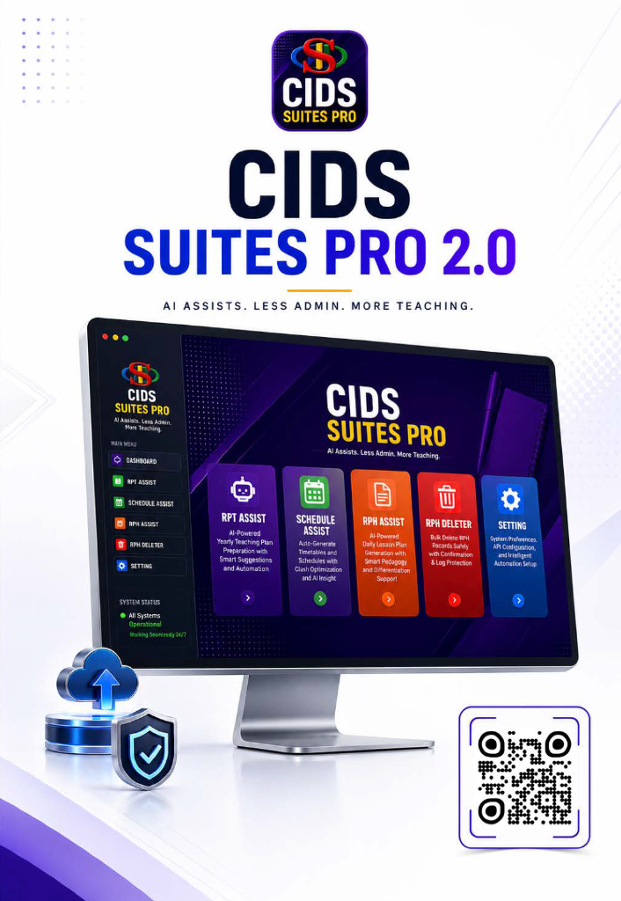
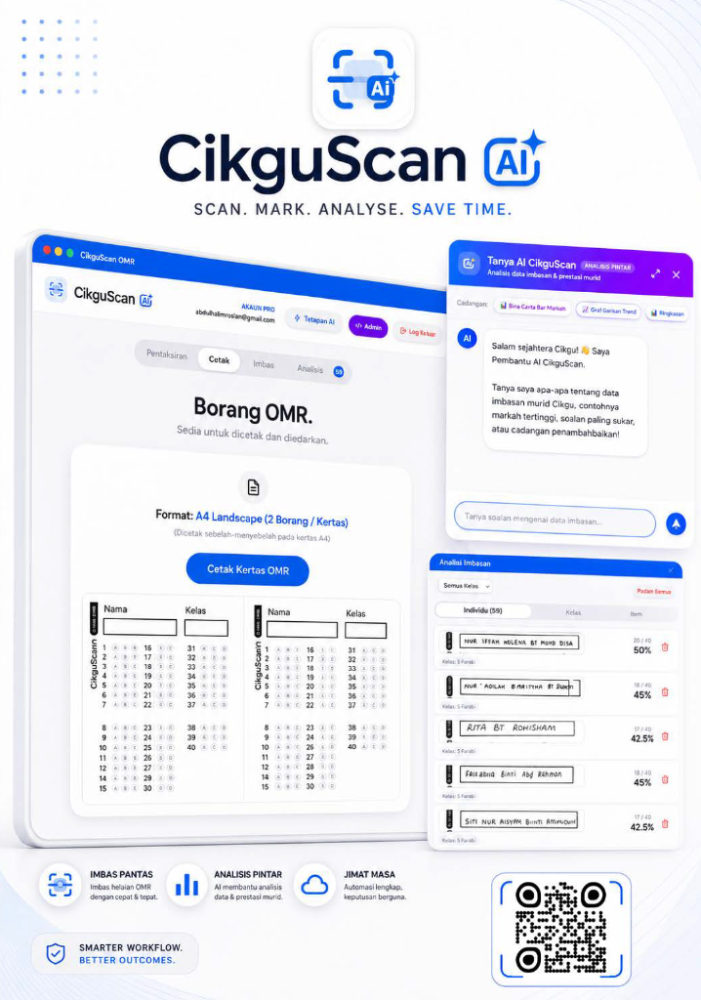
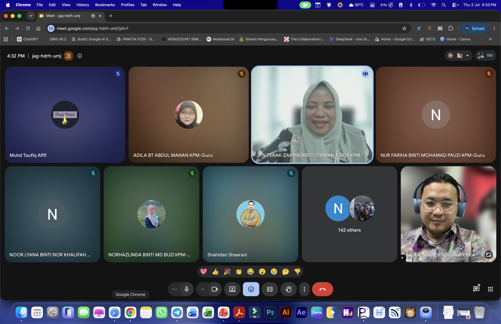
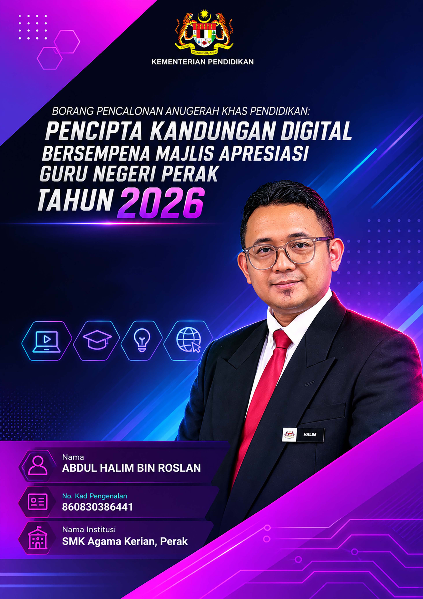

Guru Cemerlang Fizik | Pencipta Kandungan Digital | Penggerak Inovasi Pendidikan
Seorang pendidik yang bersemangat dalam bidang pendidikan Fizik dan teknologi digital. Komited untuk menghasilkan bahan pembelajaran inovatif yang menyeronokkan, interaktif dan berimpak tinggi kepada murid dan komuniti pendidik.
Menggabungkan pedagogi berkesan dengan teknologi terkini untuk mewujudkan pengalaman pembelajaran yang menarik dan inklusif. Setiap inovasi dihasilkan berasaskan keperluan sebenar guru dan murid.
Pencapaian berprestij di peringkat Antarabangsa, Kebangsaan, Negeri, dan Daerah.
International Innovation & Exhibition Fair (IIEF 2025) anjuran Kolej MARA Kulim.
SDG Innovation Competition anjuran Universiti Sains Malaysia (USM).
Penerima APC KPM sebanyak dua kali (Tahun 2016 & 2026).
Penyertaan persidangan antarabangsa dan pensijilan bimbingan teknologi Apple South East Asia.
Pensijilan bimbingan profesional teknologi global oleh Apple South East Asia bagi menyokong transformasi pengajaran digital.
Membentangkan kajian amali makmal maya MyHomePhysicsLab di persidangan inovasi antarabangsa.
Pelantikan sebagai panel pakar kurikulum BPK KPM dan penyelidikan Universiti Kebangsaan Malaysia (UKM).
Penyelidikan Pembinaan Kandungan Ilmu Fizik Teknologi Dron Pendidikan Menengah anjuran Universiti Kebangsaan Malaysia.
Panel Pembinaan Modul MOBIM Sains Tambahan & Reka Bentuk Penerapan Matlamat Pembangunan Mampan (SDG) Fizik.
Penggerak inovasi pedagogi negeri, penulis modul anekdot JPN Perak, dan bimbingan guru daerah.
Karya penulisan ilmiah dalam buku "Rona-Rona Pendidik: Anekdot Edufluencers KPM Negeri Perak".
Membimbing ratusan guru Fizik dan sains seluruh Perak dalam penggunaan alat digital PAK21.
Kepimpinan guru cemerlang daerah Kerian dan pembudayaan inovasi di SMK Agama Kerian.
Memimpin kepakaran guru cemerlang daerah Kerian dalam memperkasa kualiti pengajaran dan pembelajaran.
Membangunkan sistem pengurusan digital sekolah dan membimbing murid dalam pertandingan STEM.
Lima inovasi berimpak tinggi yang dibangunkan untuk memacu kecemerlangan murid dan kecekapan guru.

Precision Science Graph Engine with 3D Robot Tutor.
Dashboard TOV-ETR SPM dengan Chat-to-Data Assistant.

Simulasi makmal 3D interaktif dan liputan 100% DSKP Fizik SPM.

AI Assists. Less Admin. More Teaching. (RPT, Jadual, RPH).

Scan. Mark. Analyse. Save Time. (Borang OMR A4 Landscape).

Platform penstriman video pembelajaran Fizik SPM KSSM gaya Netflix.
Video persembahan rasmi memperkenalkan diri, demonstrasi ekosistem digital, impak bilik darjah dan visi masa depan.
Akses resolusi tinggi kepada fail borang pencalonan rasmi, sijil anugerah, surat pelantikan, dan modul amali.
